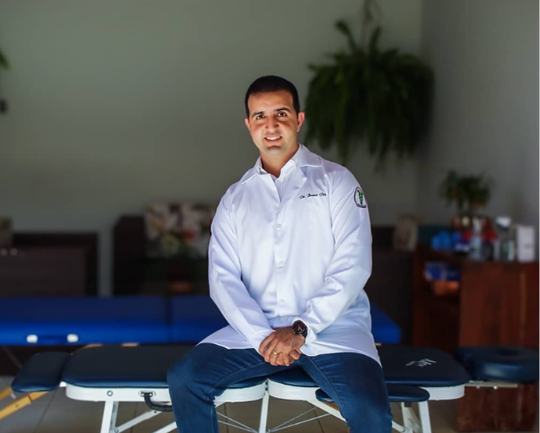
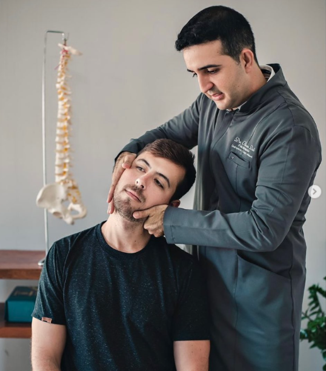

Desconfortos na coluna
Auxílio no manejo de rigidez e sobrecargas na coluna lombar, torácica e cervical resultantes de esforços ou sedentarismo.
Cuidado quiroprático humanizado e individualizado para auxiliar na sua mobilidade, postura e bem-estar, respeitando a biomecânica do seu corpo.


Acredito que cada corpo possui uma história única e rotinas distintas. Por isso, meu foco na clínica Reajustar Saúde não está em aplicar protocolos de forma genérica, mas em compreender profundamente as necessidades de cada paciente.
Através de uma avaliação física minuciosa e escuta ativa, planejo intervenções quiropráticas focadas em otimizar a função do seu sistema musculoesquelético. Meu compromisso é fornecer um acompanhamento ético, seguro e baseado nas suas metas pessoais de mobilidade e conforto funcional.
[Preencher: breve descritivo sobre tempo de experiência, formação acadêmica, número de associação profissional ou abordagem clínica de preferência.]
Nosso trabalho é voltado à reabilitação e otimização do movimento, auxiliando o corpo a funcionar com menos sobrecarga e mais equilíbrio.
Auxílio no manejo de rigidez e sobrecargas na coluna lombar, torácica e cervical resultantes de esforços ou sedentarismo.
Acompanhamento voltado a minimizar tensões musculares regionais que impactam o foco e o conforto no final do dia.
Trabalho biomecânico para restaurar a amplitude de movimento articular, favorecendo uma sustentação postural mais limpa e harmônica.
Cuidado de manutenção para quem busca longevidade, prevenção de rigidez articular e melhora contínua na qualidade de vida.
Um processo estruturado em três passos para garantir transparência e precisão do início ao fim.
Ouvimos seu histórico, entendemos sua rotina e realizamos testes posturais e de mobilidade para mapear as áreas de sobrecarga.
Realizamos os ajustes articulares e orientações biomecânicas adequadas especificamente à condição apresentada no momento da avaliação.
Monitoramos sua progressão motora e definimos estratégias ou exercícios complementares para sustentar os resultados no longo prazo.
Os atendimentos acontecem na clínica Reajustar Saúde, um espaço planejado para oferecer conforto, tranquilidade e privacidade durante cada sessão em Mineiros.
Informações claras sobre a prática quiroprática e nosso modelo de atendimento.
A quiropraxia é uma área da saúde dedicada ao diagnóstico, tratamento e prevenção de disfunções mecânicas do sistema musculoesquelético e os efeitos dessas disfunções na função normal do sistema nervoso e na saúde geral, utilizando técnicas manuais, com ênfase na manipulação articular.
Nossa primeira consulta é estruturada em duas partes: uma avaliação detalhada (com escuta ativa de sintomas, testes ortopédicos e de mobilidade) e, quando indicada com segurança, a realização dos primeiros ajustes manuais e orientações posturais imediatas.
A maioria das pessoas de diferentes idades pode se beneficiar do cuidado quiroprático. No entanto, a indicação precisa depende de uma avaliação presencial prévia, na qual verificamos se há contraindicações clínicas e qual a técnica mais segura e adaptada para o seu perfil e momento funcional.
Não trabalhamos com pacotes padronizados ou promessas de tempo fixo para recuperação. A quantidade e a frequência das consultas variam inteiramente segundo o seu histórico clínico, nível de sobrecarga física e resposta biológica individual aos ajustes iniciais.
O agendamento é rápido e centralizado pelo nosso WhatsApp. Basta clicar em qualquer botão do site para ser direcionado à nossa conversa na clínica Reajustar Saúde, onde informaremos datas, horários disponíveis e valores de consulta.
Dê o primeiro passo para uma rotina com maior mobilidade e conforto funcional.
Agendar pelo WhatsApp